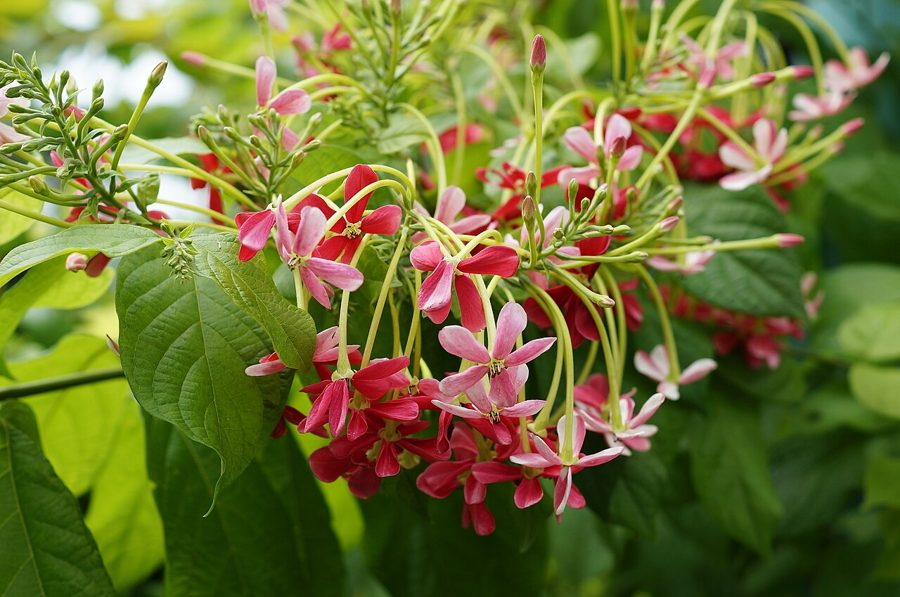

रंगून बेलRangoon Creeper
Combretum indicum · Combretaceae · FLR-0429

- Scientific name वैज्ञानिक नाम
- Combretum indicum (L.) DeFilipps
- Family कुल
- Combretaceae
- Hindi हिंदी
- रंगून बेल
- Local names स्थानीय नाम
- rangoon bel, madhumalati, rangoon creeper, chinese honeysuckle, vilayati chambeli
- Status here यहाँ की स्थिति
- cultivated
- Movement आवागमन
- Resident, here all year
- Known from कहाँ दर्ज
- Others have published records from the wider Awadh–Purvanchal plain, none yet from Basti–Ayodhya अवध–पूर्वांचल से दूसरों के प्रकाशित अभिलेख, बस्ती–अयोध्या से अभी नहीं
- IUCN IUCN
- not evaluated
- Review समीक्षा
- not yet reviewed
When to look कब देखें
Present all year. साल भर मौजूद।
Uses and possibilities उपयोग और संभावनाएँ
“Traditional medicine” means a documented traditional use, not a claim that it works. Nothing on this page is medical advice.
Drawn from the documented uses in the profile below, where each is labelled traditional, current or a research lead. All uses →
Tell it apart from इनसे अलग पहचानें
रंगून बेल / Rangoon Creeper
Combretum indicum (L.) DeFilipps — Combretaceae
रंगून बेल — घरों के दरवाजों, छतों और बाउंड्री की दीवारों पर चढ़ाई जाने वाली यह एक अत्यंत लोकप्रिय और खुशबूदार लता है। इसके तनों पर मुड़े हुए कांटेदार डंठल होते हैं जो इसे ऊपर चढ़ने में मदद करते हैं। इसके फूलों का एक अनूठा चमत्कार यह है कि वे खिलते समय दूधिया सफेद होते हैं, दोपहर में गुलाबी हो जाते हैं और शाम तक गहरा लाल रंग ले लेते हैं। रात के समय इसके फूलों से निकलने वाली मीठी महक पूरे आंगन को महका देती है। प्राचीन चिकित्सा में इसके बीजों का उपयोग पेट के कीड़े मारने के लिए किया जाता रहा है।
Quick Identification त्वरित पहचान
| Feature | Description |
|---|---|
| Habit | Vigorous, large, rambling woody climber with soft porous wood and flaky bark |
| Petioles | Lower half of petiole persistent and hardening into a stiff curved woody climbing spine |
| Leaves | Opposite or sub-opposite, elliptic to ovate-oblong, acuminate, entire, smoothish |
| Inflorescence | Drooping terminal and axillary spikes packed with slender tubular blossoms |
| Flower-colour | Color-changing: opening pure white at dusk, turning pink the next morning, and deep crimson by evening |
| Fruit | Narrowly ellipsoid, glossy, dark brown, sharply multi-angled winged dry fruit |
Field tip: Look over entrance arches, garden trellises, and verandah railings across towns and villages. The drooping clusters of fragrant tubular flowers displaying white, pink, and red blooms on the exact same cluster identify Combretum indicum without ambiguity.
हिंदी: एक ही गुच्छे में एक साथ सफेद, गुलाबी और लाल फूल लटके देखकर इसे तुरंत पहचाना जा सकता है। इसके पुराने पत्तों के डंठल मुड़े हुए कांटे की तरह मजबूत हो जाते हैं।
Morphology आकारिकी
| Measurement / Trait | Range / Description |
|---|---|
| Growth-form | Extensive woody climbing liana scrambling high into tree canopies and over fences |
| Bark & Twigs | Thin grey bark peeling in small flakes; young branchlets softly pubescent to villous |
| Leaf-blade | Elliptic or ovate-oblong, acuminate, rounded or subcordate at base |
| Petiole-base | Basal portion persistent, becoming hard, woody, spine-like, hooking branches onto supports |
| Calyx-tube length | 2–3 in. (Kirtikar & Basu 1918) |
| Petals | Five, oblong to rounded, spreading horizontally from the summit of the slender calyx tube |
| Fruit | Ellipsoid, dry, leathery, with sharp longitudinal wings and a solitary furrowed seed |
A large, robust woody climbing shrub with rambling branches and soft wood. The young shoots are softly pubescent. The leaves are elliptic or oblong with acuminate tips, arranged alternately on vigorous shoots and opposite on flowering stems.
The flowers are borne in showy drooping spikes. The free part of the calyx tube is remarkably slender, carrying five spreading petals that transition in color across their lifecycle. The fruit is a dry, coriaceous five-winged nut that is rarely produced in cultivation outside its native tropical forest range.
हिंदी: यह एक मोटी लकड़ी वाली लता है। इसके फूल की पतली नली 2–3 in. लंबी होती है। फूल की पंखुड़ियां शुरू में सफेद, फिर गुलाबी और अंत में गहरी लाल हो जाती हैं।
Behaviour & Ecology व्यवहार और पारिस्थितिकी
Rangoon creeper is a sun-loving tropical climber requiring warm temperatures, fertile, well-drained loamy soil, and structural support to clamber upwards. In gardens, it uses hardened persistent petiole bases that function as woody climbing hooks.
The spectacular floral color transition represents an evolutionary mechanism to exploit different pollinator guilds. Fresh white nocturnal blossoms produce strong sweet scent to attract long-tongued hawk moths (Sphingidae). By day, the corolla darkens to red and pink, signaling to daytime butterflies, honeybees, and sunbirds while scent output diminishes.
हिंदी: यह लता धूप और सहारे के साथ बहुत तेजी से ऊपर चढ़ती है। रात में सफेद फूल पतंगों को लुभाते हैं और दिन में लाल फूल तितलियों और मधुमक्खियों को आकर्षित करते हैं।
Life Cycle / Phenology जीवन चक्र
Rangoon creeper is a vigorous climbing liana that climbs by means of hardened persistent petiole bases that function as woody spines.
Individual tubular flowers open at dusk displaying pure white petals that release a strong fragrance to nocturnal hawk moths. Over subsequent daylight cycles, the corolla transitions sequentially to pink and deep crimson red, attracting diurnal butterflies and bees.
हिंदी: इसके पुराने पत्तों के डंठल मजबूत कांटे बनकर लता को ऊपर चढ़ने में सहारा देते हैं। शाम को इसके सफेद सुगंधित फूल खिलते हैं जो अगले दिनों में गुलाबी और गहरे लाल रंग में बदल जाते हैं।
Associated Species / Interactions सहजीवी प्रजातियाँ
Commonly trained over gates and boundary trellises alongside other ornamental climbers such as कोरल वाइन (Antigonon leptopus), or climbing over mature garden shade trees including नीम (Azadirachta indica) and जामुन (Syzygium cumini).
Hawk moths such as Theretra clotho and Macroglossum humming-bird hawk moths visit at dusk, while swallowtail butterflies (Papilio polytes) and honeybees visit the pink and crimson flowers by day.
हिंदी: बगीचों में इसे कोरल बेल और चमेली के साथ लगाया जाता है। इसके फूलों का रस पीने के लिए दिन में तितलियाँ और शाम को बड़े पतंगे आते हैं।
Pests and Diseases कीट और रोग
Rangoon creeper is a vigorous and robust plant that experiences relatively few debilitating pest problems under normal garden conditions.
Caterpillars of diverse moths occasionally feed on young tender foliage during the humid monsoon weeks. In shady, poorly ventilated garden corners, powdery mildew can coat mature leaves with a whitish fungal film in late autumn, and heavy infestations of scale insects may appear on older woody stems.
हिंदी: यह एक मजबूत बेल है, हालांकि बरसात में कुछ कीड़े इसके पत्ते खा सकते हैं। हवा की कमी और ज्यादा छांव वाले स्थानों में पत्तों पर सफेद फफूंद लग सकती है।
Agricultural / Human Relevance कृषि प्रासंगिकता
Rangoon creeper is widely grown on residential gates and garden fences for its tricolored floral clusters and evening fragrance.
Kirtikar & Basu (1918, p. 550) record under Quisqualis indica that the seeds are used as an anthelmintic for expelling intestinal worms in children. Chopra et al. (1956, p. 209) likewise record under Quisqualis indica (Hindi: Rangoon-ki-bel) that the seeds are anthelmintic.
हिंदी: कीर्तिकर और बसु (1918, पृ. 550) तथा चोपड़ा (1956, पृ. 209) के अनुसार इसके बीजों का उपयोग पेट के कीड़े (कृमि) नष्ट करने के लिए किया जाता है। घरों में इसे सुंदरता और खुशबू के लिए लगाया जाता है।
Expected Locally स्थानीय रूप से अपेक्षित
Not a field record. Written from published accounts for eastern Uttar Pradesh. No confirmed local sighting yet — if you have seen it, that is what the atlas needs.
अभी तक स्थानीय पुष्टि नहीं। यह विवरण प्रकाशित स्रोतों से है, किसी अवलोकन से नहीं।
GBIF holds published records from the wider Awadh–Purvanchal plain, none yet from Basti–Ayodhya.
GBIF holds records from Prayagraj, Kaushambi, Gautam Buddha Nagar, Lucknow and Varanasi, among other districts. In Basti, Ayodhya, and neighbouring towns, it is widely planted in household compounds and public parks. A confirmed local record would consist of a photograph documenting the tricolored flower clusters, hooked persistent petiole bases, and climbing habit with date and coordinates.
हिंदी: प्रयागराज, कौशाम्बी, लखनऊ और वाराणसी से इसके रिकॉर्ड मौजूद हैं। बस्ती और अयोध्या के घरों के मुख्य द्वार पर लगे इस रंग बदलने वाले फूल को आसानी से देखा जा सकता है।
Distribution वितरण
Native to tropical Asia, ranging from the eastern Indian subcontinent through Myanmar, Thailand, Malaysia, Indonesia, and the Philippines, and introduced throughout the tropics worldwide as an ornamental.
In India, it is widely cultivated in all states, flourishing outdoors in warm tropical and subtropical plains where winter frosts are absent or mild.
हिंदी: मूल रूप से दक्षिण-पूर्व एशिया की यह बेल भारत के लगभग सभी राज्यों में बगीचों और आंगनों की शोभा बढ़ाने के लिए उगाई जाती है।
Research Questions शोध प्रश्न
- What biochemical triggers regulate the light-dependent anthocyanin color shift in Combretum indicum petals?
- How do daytime and night-time pollinator assemblages differ in their efficiency of pollen transfer across tricolored floral clusters?
- क्या इस लता के बीजों के कृमिनाशक गुणों का उपयोग पशुओं के पेट के कीड़े मारने के लिए सुरक्षित रूप से किया जा सकता है?
- What architectural load can a mature woody stem support before causing damage to host garden fences and trellises?
- क्या इसके फूलों के सुगंधित तेल का व्यावसायिक निष्कर्षण इत्र उद्योग के लिए संभव है?
हिंदी: क्या फूलों के रंग बदलने से दिन और रात के परागण करने वाले कीड़ों के व्यवहार में अंतर आता है, इस पर वैज्ञानिक शोध रोचक होगा।
Similar Species मिलती-जुलती प्रजातियाँ
| Species | Key Differences | Habitat / Occurrence | |
|---|---|---|---|
| [[coral_vine | कोरल वाइन (Antigonon leptopus)]] | Climbs by branched inflorescence tendrils; flowers uniformly rose-pink, not color-changing | Fences, railway tracks, and town borders |
| Combretum latifolium (Broad-leaved Combretum) | Large wild forest liana; flowers pale greenish-yellow; fruit large, 4–5 winged | Moist deciduous and evergreen forests | |
| Jasminum grandiflorum (Chameli) | Slender climber with pinnate leaves; flowers star-shaped, pure white, intensely fragrant | Widely cultivated in gardens and courtyards | |
| [[neem | नीम (Azadirachta indica)]] | Large shade tree; pinnate serrate leaves; small white fragrant flowers | Ubiquitous native village and roadside tree |
Field rule: A woody climber with drooping clusters of long-tubed flowers that open pure white, turn pink, and darken to crimson on the same truss is Combretum indicum.
हिंदी: कोरल वाइन के फूल प्रतान के सहारे लटकते हैं और केवल गुलाबी होते हैं, जबकि रंगून बेल के फूल रंग बदलते हैं और बहुत खुशबूदार होते हैं।
Taxonomy & Classification वर्गीकरण
Original description. Named Quisqualis indica by Carl Linnaeus in 1762 in Species Plantarum, second edition, page 556. Robert DeFilipps transferred the species to the genus Combretum in 1998 in Useful Plants of Dominica, page 277 (Combretum indicum (L.) DeFilipps).
Subspecies. Monotypic; no valid subspecies are recognized. Historical Indian floras, including Duthie and Kirtikar & Basu, universally treated this species under the classical generic name Quisqualis.
Family and order placement. Placed in the white mangrove and leadwood family Combretaceae, subfamily Combretoideae, tribe Combreteae, and order Myrtales.
IUCN status rationale. Not Evaluated (NE) on the IUCN Red List due to its status as a widely cultivated and naturalized ornamental plant across the tropics.
हिंदी: लीनियस ने 1762 में इसे Quisqualis indica नाम दिया था, जिसे 1998 में डेफिलिप्स ने Combretum वर्ग में शामिल किया। यह कॉम्ब्रेटेसी कुल का पौधा है और आईयूसीएन द्वारा मूल्यांकित नहीं है।
Photo Gallery फोटो गैलरी
No photos yet. (Contributions welcome!)
References संदर्भ
- Linnaeus, C. (1762). Species Plantarum, Editio Secunda, Tomus I. Impensis Direct. Laurentii Salvii, Holmiae, p. 556.
- DeFilipps, R. A. (1998). Useful Plants of the Commonwealth of Dominica. Department of Botany, Smithsonian Institution, Washington D.C., p. 277.
- Duthie, J. F. (1903). Flora of the Upper Gangetic Plain, and of the Adjacent Siwalik and Sub-Himalayan Tracts, Vol. 1, Part 1. Superintendent of Government Printing, Calcutta, p. 340.
- Kirtikar, K. R. & Basu, B. D. (1918). Indian Medicinal Plants, Part 1. Panini Office, Bhuwaneshwari Asrama, Bahadurganj, Allahabad, p. 550.
- Chopra, R. N., Nayar, S. L. & Chopra, I. C. (1956). Glossary of Indian Medicinal Plants. Council of Scientific & Industrial Research, New Delhi, p. 209.
- GBIF Secretariat (2026). Combretum indicum (L.) DeFilipps. GBIF Backbone Taxonomy. Checklist dataset https://doi.org/10.15468/39omei.
Source file: species/flora/climbers/rangoon_creeper.md